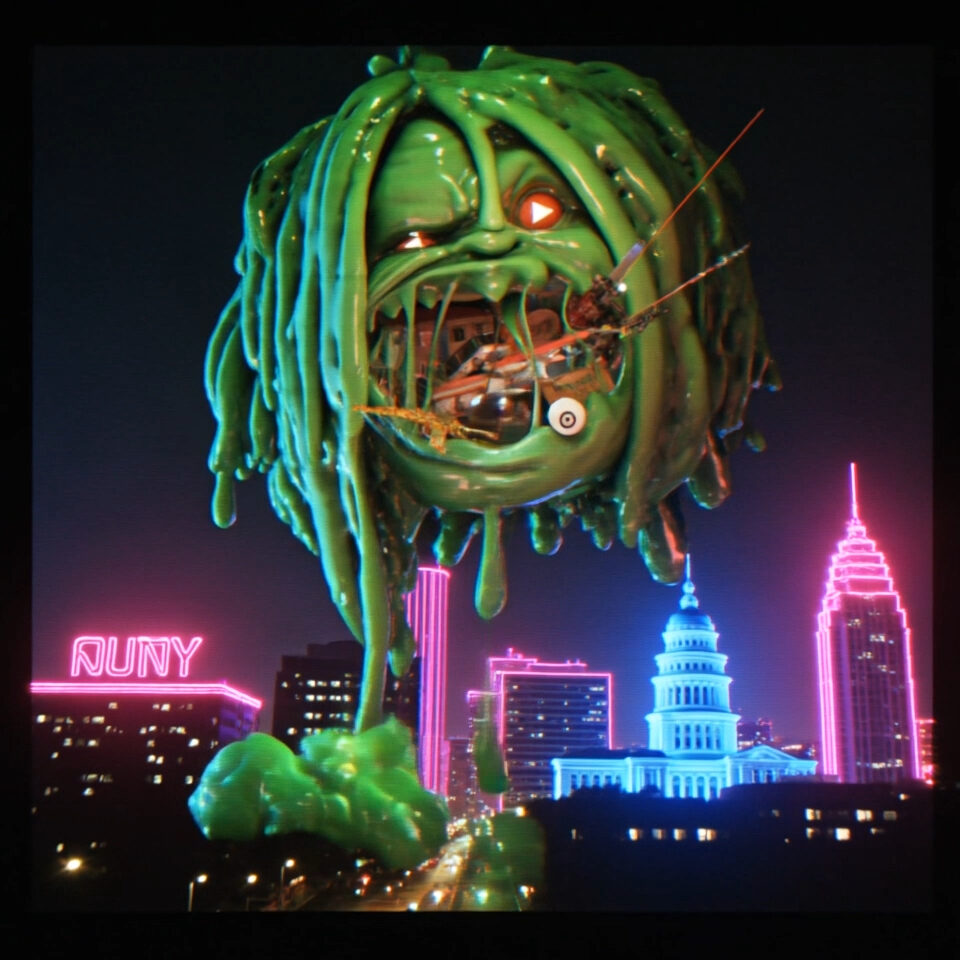
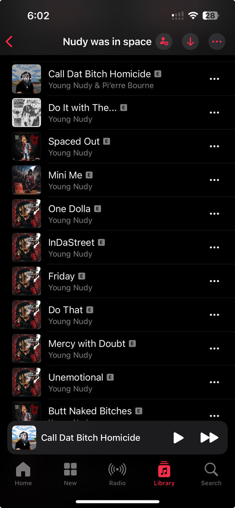
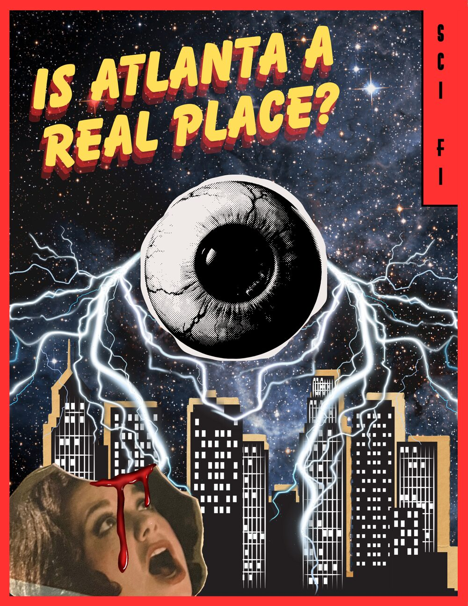
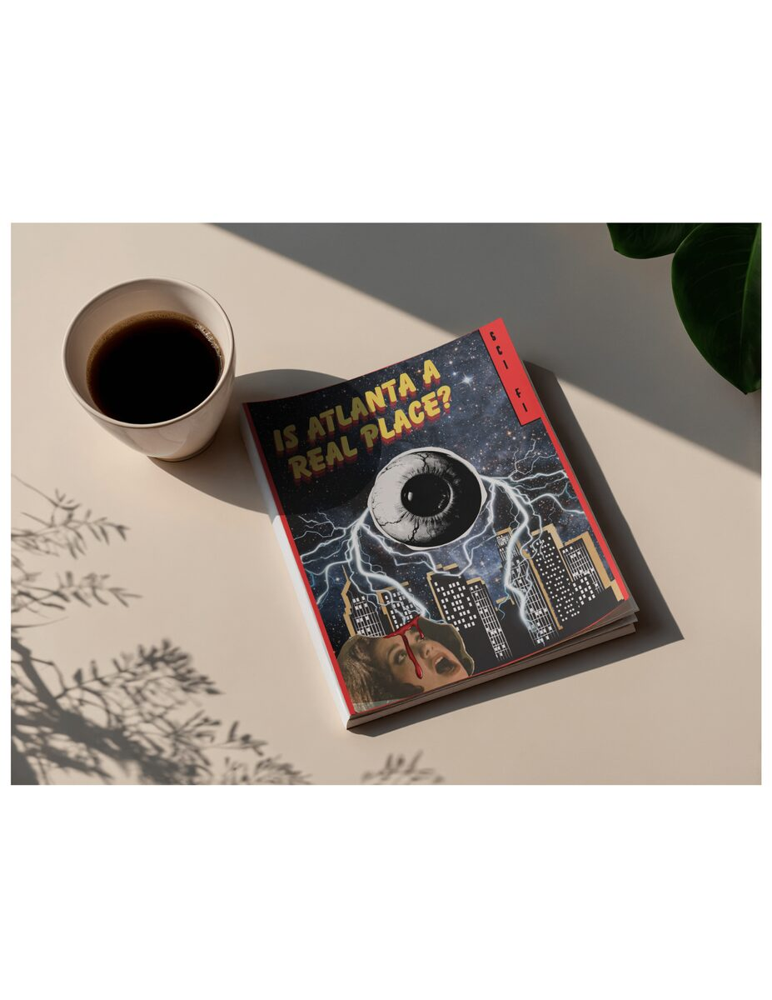
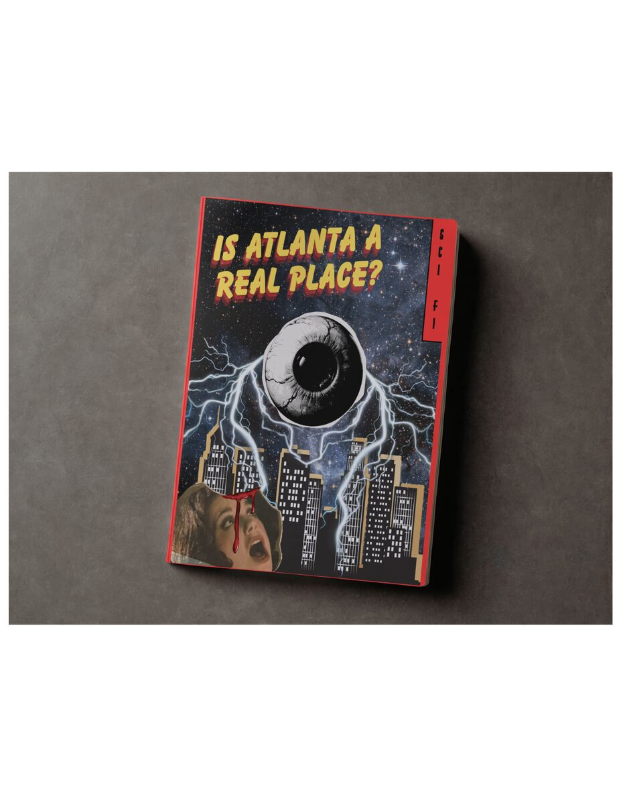
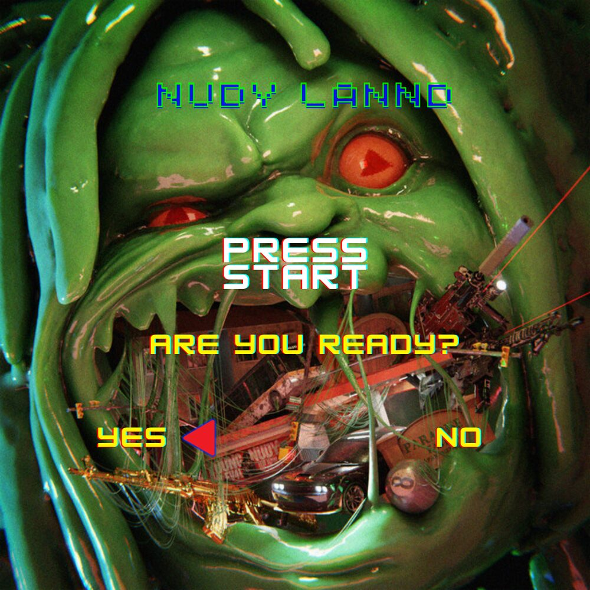
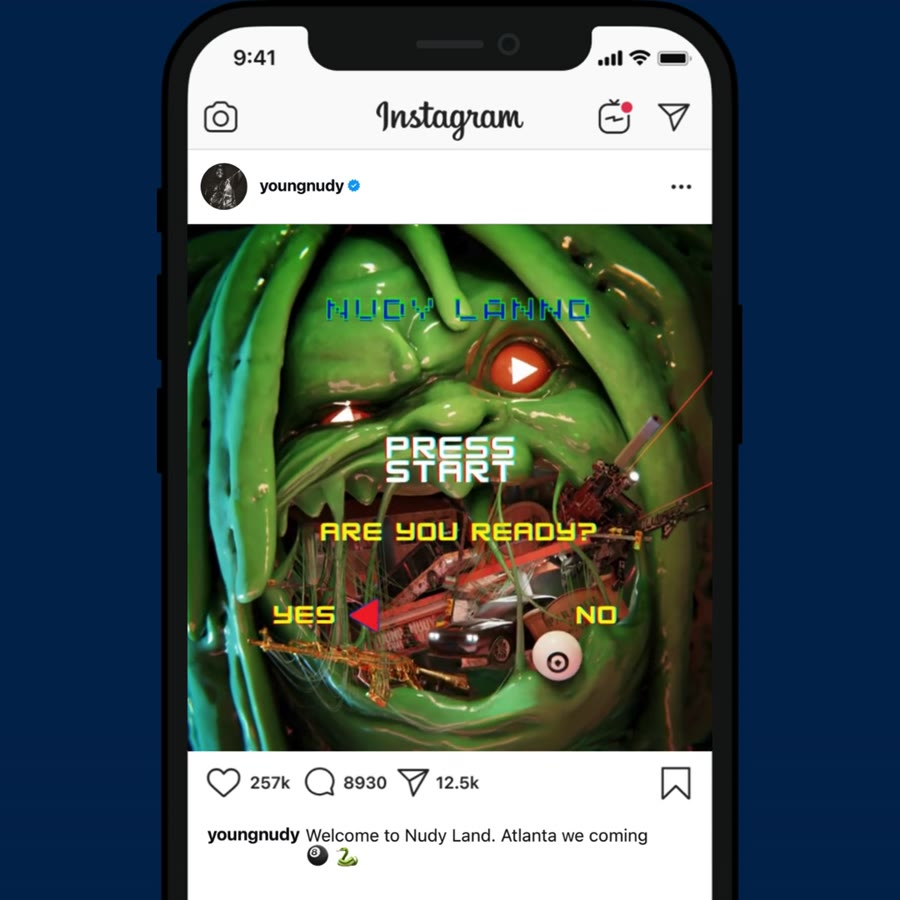
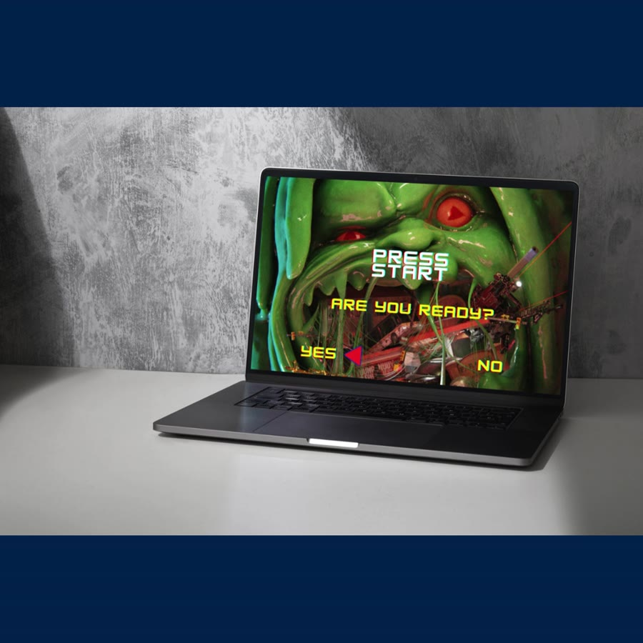
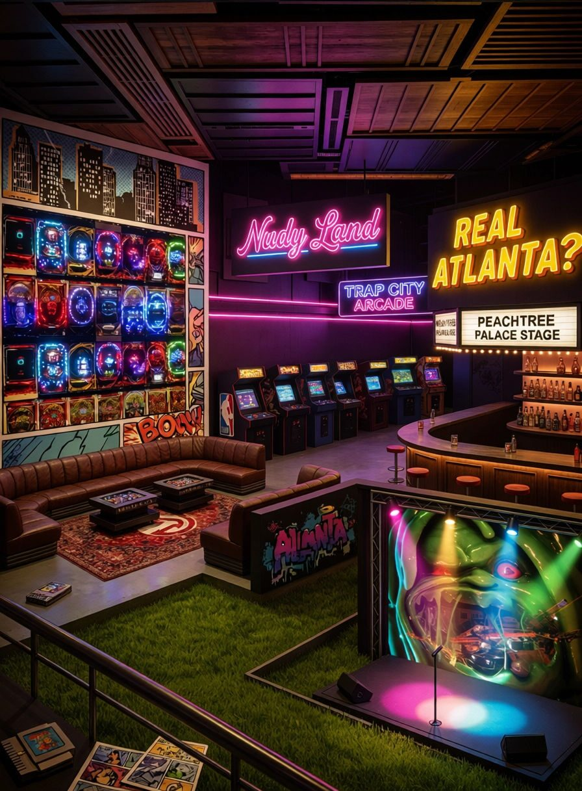
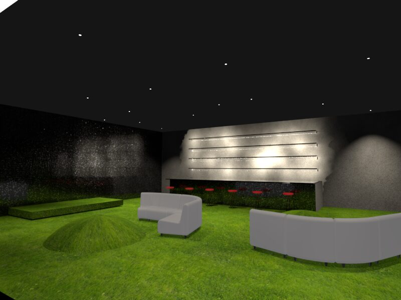

Nudy Land Concept
Case study · Artist D2C commerce
Self-initiated concept. Not affiliated with Young Nudy or his label.

My creative philosophy
Fans don't buy merch, they buy entry into a world. That's the emotional truth I design for.
But emotion alone doesn't scale. My background in building digital experiences taught me to think in systems: frameworks that flex and grow with the artist, not rigid structures that box them in.
Every project, I ask two questions: What world are we building? And how do we ensure it keeps evolving?
01 · Idea origin
The South breeds sound. Outkast. DJ Screw. A lineage of experimentation that keeps evolving. Young Nudy is part of that story.
I was sitting in my living room, Nudy playing through my speakers, and I started imagining: What if Nudy scored a sci-fi film? Not a blockbuster. Something gritty. Something that felt like Atlanta in 3025.
That imagination became a playlist. That playlist became a world. That world became Nudy Land: a place where trap meets dystopia, and fans don't just shop, they step into Nudy's universe.

nudy was in space : playlist 01
- Do It With The…
- Spaced Out
- Mini Me
- One Dolla
- Blue Cheese Salad
- Cap Dem
- GTA Lyfestyle
- Mister (feat. 21 Savage)
02 · World building: the comic
The universe needed something fans could hold, something that told the story behind the world. So I concepted “Is Atlanta a Real Place?”, a limited-edition comic book set in a dystopian, sci-fi Atlanta. 24 pages. 500 copies. Scored entirely by Nudy's music.



Why this works
- Scarcity: 500 copies create FOMO. Fans buy now or miss out.
- Storytelling: extends the Nudy Land narrative beyond the store.
- Community: fans share theories, unboxings, and organic marketing.
- Email capture: exclusive pre-order access for subscribers.
Projected impact
- Sells out in under 48 hours
- 30% of buyers join the mailing list for future drops
- Social buzz drives traffic to the full store
Mock press headlineStep into the world of Young Nudy's sci-fi comic book
03 · The game
To deepen the universe, I concepted a retro-style video game: a dystopian adventure set in a futuristic Atlanta, soundtracked entirely by Nudy's music.
The strategy
- Drives traffic to the pop-up: players who finish the game unlock an exclusive in-person event code.
- Drives traffic to the website: in-game merch tokens link to the store.
- Social fuel: fans share high scores, gameplay clips, and Easter eggs.



04 · IRL activation: the Nudy Land pop-up
Inspired by 2 Chainz's Pink Trap House, I concepted a physical activation in East Atlanta: a lounge arcade that brings the Nudy Land universe to life.
The insight
IRL experiences build deeper emotional connections than digital touchpoints alone.
- Lounge atmosphere: mingle, vibe, and immerse in Nudy's discography.
- Arcade gaming: play the game on retro machines.
- Exclusive merch: limited-edition items only available in person.
- Drinks & culture: a space that feels like Nudy's world, not a retail store.

